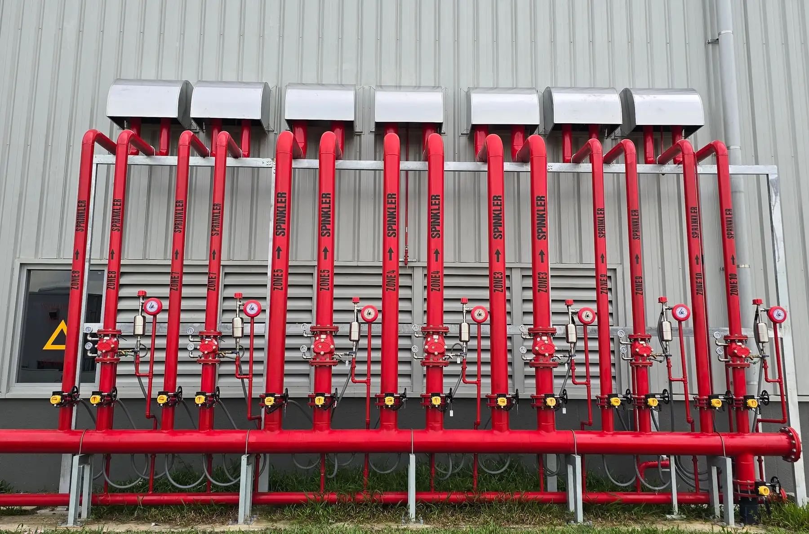

Ūdensapgādes un kanalizācijas būvuzraudzība
Būvdarbu vadīšana un būvuzraudzība ūdensvadam, kanalizācijai un ugunsdzēsības sistēmām.
Kur ir mūsu darbs
Šīm sistēmām mūsu darbs ir objektā. Ūdensapgādes un kanalizācijas (ŪK) daļu projektē cits projektētājs, bet mēs pārbaudām, vai sistēmas izbūvē pēc šī projekta un normatīviem.
Ūdensvads
Aukstā un karstā ūdens cauruļvadi, cirkulācija, ievads ēkā un ūdens skaitītāju mezgli.
Kanalizācija
Sadzīves kanalizācija ēkā līdz izlaidei, kanalizācijas ventilācija un lietus ūdens novadīšana, ja tā ir projektā.
Ugunsdzēsības sistēmas
Iekšējais ugunsdzēsības ūdensvads ar ugunsdzēsības krāniem un automātiskās ūdens ugunsdzēsības sistēmas, ja tās ēkai paredzētas.
Ko pārbaudām objektā
Ūdensvads un kanalizācija lielākoties paliek sienās, grīdā vai zemē. Tāpēc svarīgākais ir tos pārbaudīt, pirms tos aizklāj vai aizber.
-
Materiāli
Caurules, veidgabali un armatūra atbilst projektam. Nomaiņu saskaņo ar projektētāju.
-
Kanalizācijas slīpumi pirms aizklāšanas
Kanalizācijas caurulēm ir projektā noteiktie slīpumi, tīrīšanas lūkas un kanalizācijas ventilācija.
-
Spiediena pārbaude pirms aizklāšanas
Ūdensvadu pārbauda ar spiedienu, pirms to aizklāj sienās vai grīdā vai aizber tranšejā. Rezultātu ieraksta aktā.
-
Izolācija un šķērsojumi pirms aizklāšanas
Caurules ir izolētas pret kondensātu un sasalšanu, un vietas, kur tās šķērso ugunsdrošības nodalījumu robežas, ir noblīvētas.
-
Ugunsdzēsības sistēmas
Ugunsdzēsības krānu, sprinkleru un vārstu novietojums atbilst projektam, un sistēmu pārbaudes ir dokumentētas.
-
Skalošana un dokumenti
Ūdensvads ir izskalots, un ir segto darbu akti, pārbaužu akti un izpildshēmas nodošanai ekspluatācijā.
| Sistēmas | Projektēšana | Būvdarbu vadīšana | Būvuzraudzība |
|---|---|---|---|
| Ūdensapgāde un kanalizācija, ieskaitot ugunsdzēsības sistēmas | nē |
Kādām ēkām
-
Daudzdzīvokļu mājām
Ūdensvada un kanalizācijas stāvvadu nomaiņa, piemēram, mājas atjaunošanas laikā.
-
Publiskām ēkām
Skolām, bērnudārziem un citām ēkām, kurās ir iekšējais ugunsdzēsības ūdensvads.
-
Uzņēmumu ēkām
Ražošanas ēkām un noliktavām, arī ar ūdens ugunsdzēsības sistēmām.
-
Privātmājām
Ūdensvadam un kanalizācijai jaunbūvē vai pārbūvē.
Biežākie jautājumi
Vai jūs projektējat ūdensapgādi un kanalizāciju?
Nē. Būvkomersantu reģistrā mūsu darbības sfēra šīm sistēmām ir būvdarbu vadīšana un būvuzraudzība. Apkures, ventilācijas un kondicionēšanas daļu projektējam paši.
Ko nozīmē segtie darbi?
Tie ir darbi, kurus pēc tam vairs nevar apskatīt: caurules sienās, grīdā vai zemē. Pirms tos aizklāj, tos pārbauda un paraksta segto darbu aktu.
Kad jāsauc būvuzraugs?
Pirms darbu sākuma, lai vienotos par pārbaužu kārtību, un noteikti pirms caurules aizklāj. Vēlāk pārbaudīt to, kas jau paslēpts, var tikai, atverot konstrukcijas.
Vai uzraugāt arī ugunsdzēsības sistēmas?
Jā. Reģistrā mūsu darbības sfēra ir ūdensapgādes un kanalizācijas sistēmas, ieskaitot ugunsdzēsības sistēmas.
Pastāstiet par savu objektu
Kāda ir ēka, kur tā atrodas un kas vajadzīgs: projekts, būvdarbu vadīšana vai būvuzraudzība. Atbildēsim un pateiksim, kas vajadzīgs tālāk.